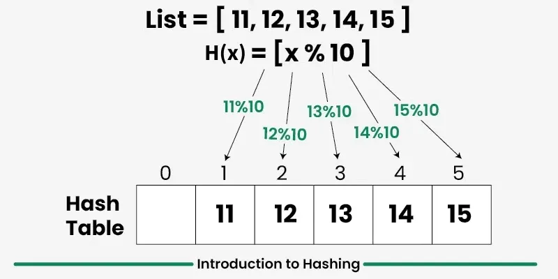
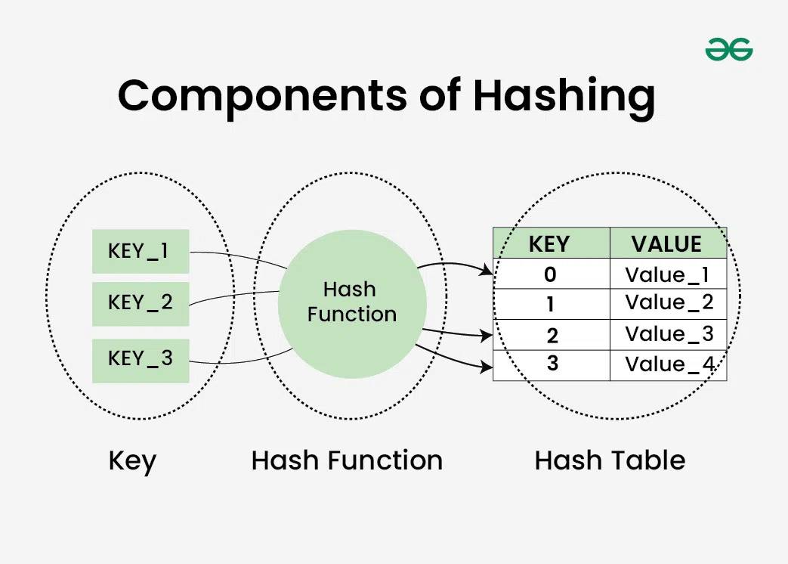
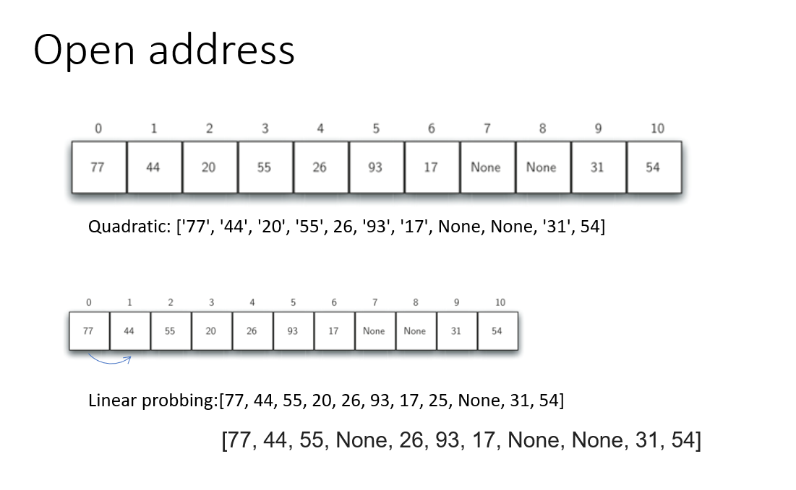

Hashing
Hashing adalah teknik yang digunakan dalam struktur data yang secara efisien menyimpan dan mengambil data dengan cara yang memungkinkan akses cepat.
- Hashing melibatkan pemetaan data ke indeks tertentu dalam tabel hash (array item) menggunakan fungsi hash . Ini memungkinkan pengambilan informasi yang cepat berdasarkan kuncinya.
- Keunggulan hashing adalah kita dapat melakukan ketiga operasi (pencarian, penyisipan, dan penghapusan) dalam waktu O(1) rata-rata.
- Hashing terutama digunakan untuk mengimplementasikan sekumpulan item yang berbeda (hanya kunci) dan kamus (pasangan kunci-nilai).
Berikut contoh hashing menggunakan metode modulo. Fungsi hash H(x) = x % 10mengubah bilangan besar apa pun menjadi nilai yang lebih kecil antara 0 dan 9.

Komponen Hashing
Secara garis besar, hashing terdiri dari tiga komponen:
- Kunci: Kunci dapat berupa string atau bilangan bulat apa pun yang dimasukkan sebagai input ke dalam fungsi hash, yaitu teknik yang menentukan indeks atau lokasi penyimpanan suatu item dalam struktur data.
- Fungsi Hash: Menerima kunci masukan dan mengembalikan indeks elemen dalam sebuah array yang disebut tabel hash. Indeks tersebut dikenal sebagai indeks hash .
- Tabel Hash: Tabel hash biasanya berupa array berisi daftar. Tabel ini menyimpan nilai yang sesuai dengan kunci. Hash menyimpan data secara asosiatif dalam sebuah array di mana setiap nilai data memiliki indeks uniknya sendiri.

Collision
54, 26, 93, 17, 77, 31, 44, 55, 20
collision : Ketika dua item di-hash ke slot yang sama, kita harus memiliki metode sistematis untuk menempatkan item kedua di tabel hash.
Solusi:
open addresing: yaitu mencoba menemukan slot atau alamat terbuka berikutnya di tabel hash.
- Linear Probing : kita mencari secara berurutan, slot demi slot, sampai kita menemukan posisi terbuka.
- Quadratic Probing :Ini berarti bahwa jika nilai hash pertama adalah h, nilai-nilai berikutnya adalah h+1, h+4, h+9, h+16, dan seterusnya.
